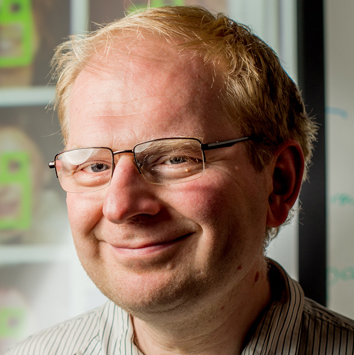
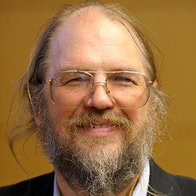
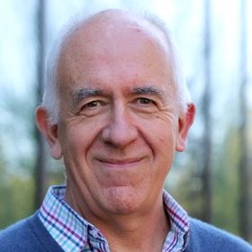
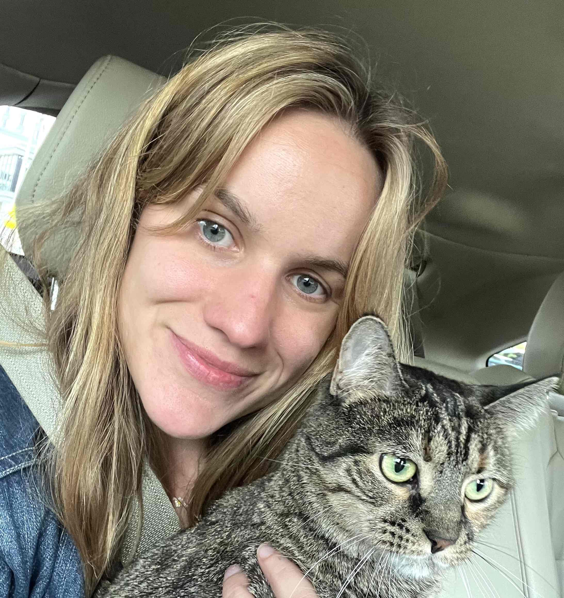
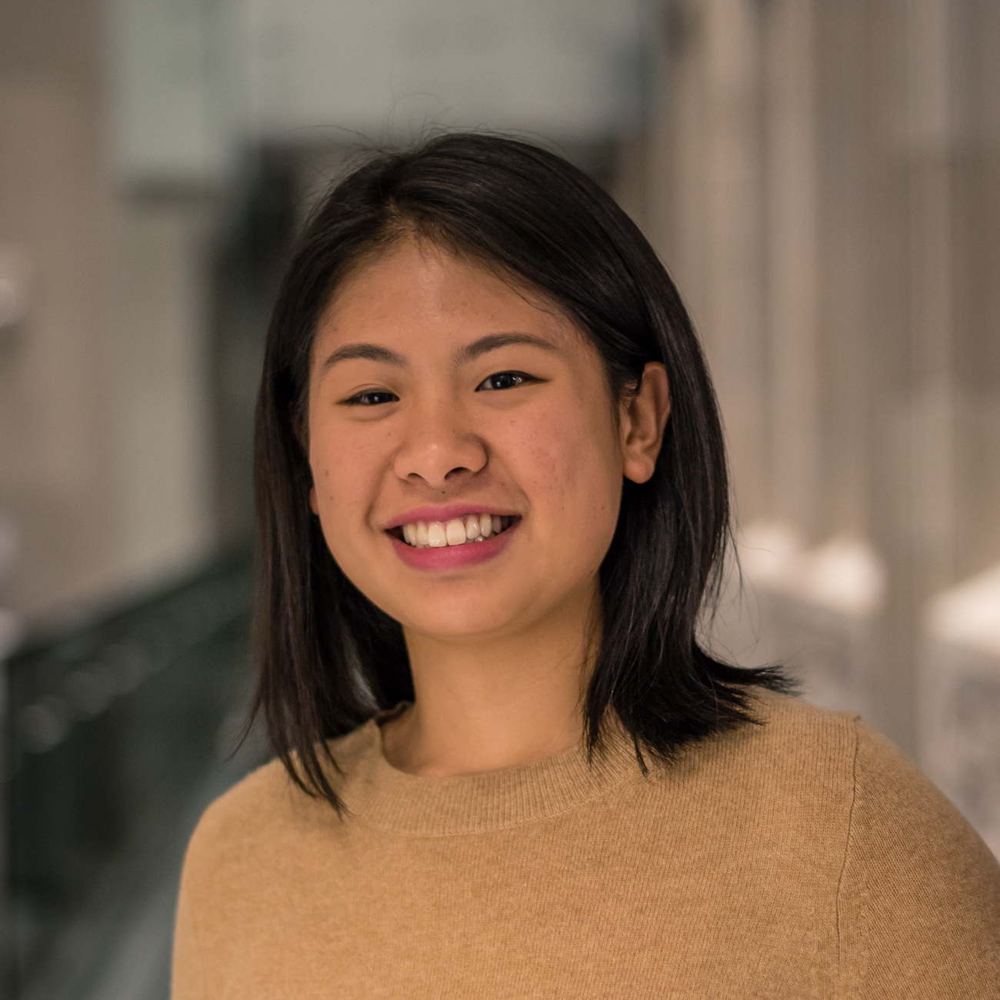
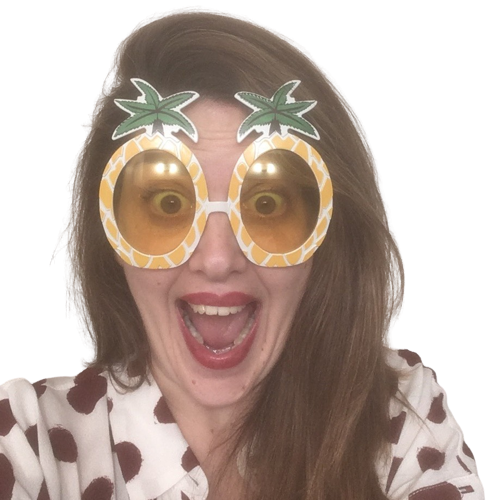

Computer vision is at an inflection point. The triumph of massive generative models is having a multi-faceted impact on our community. On one hand, the advent of these models has opened up new avenues of research and generated new challenges, making the field even more exhilarating. The field is experiencing a significant influx of new researchers and engineers eager to build on these recent breakthroughs, and the industry is driving towards the development of end-user products. On the other hand, the rapid pace of progress and fear of not keeping up with key developments is leaving researchers uncertain about which problems to tackle next. It’s likely that a significant proportion of computer vision researchers are undergoing a type of “existential crisis” currently, and that’s why we believe a workshop would provide an excellent opportunity to address and discuss this new state of affairs.
|

Alyosha Efros |

David Forsyth |
Bill Freeman |
Lana Lazebnik |
Jitendra Malik |

Pietro Perona |
Olga Russakovsky |

Antonio Torralba |
| 1:30pm - 1:50pm |
Welcome from Organizers |
| 1:50pm - 2:10pm |
David Forsyth (pdf) |
| 2:10pm - 2:30pm |
Bill Freeman (pdf) |
| 2:30pm - 2:45pm |
QA with David & Bill |
| 2:45pm - 3:00pm |
Coffee Break ☕ |
| 3:00pm - 3:20pm |
Alyosha Efros (pdf) |
| 3:20pm - 3:40pm |
Lana Lazebnik (pdf) |
| 3:40pm - 4:00pm |
Jitendra Malik (pdf) |
| 4:00pm - 4:15pm |
QA with Alyosha, Lana & Jitendra |
| 4:15pm - 4:30pm |
Coffee Break ☕ |
| 4:30pm - 4:50pm |
Pietro Perona (pdf) |
| 4:50pm - 5:10pm |
Olga Russakovsky (pdf) |
| 5:10pm - 5:30pm |
Antonio Torralba (pdf) |
| 5:30pm - 5:45pm |
QA with Pietro, Olga & Antonio |
|

Mia Chiquier |

Berthy Feng |
Peter Tong |
Saining Xie |

Georgia Gkioxari |